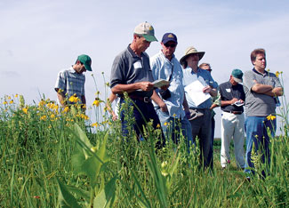

Mayor Ann Campbell, a 40-year resident of Ames, Iowa, is committed to making her hometown greener and healthier. A signee of the U.S. Conference of Mayors Climate Protection Agreement (a voluntary pledge to curb greenhouse gas emissions on a municipal level), she’s worked with the city council to purchase a fleet of hybrid vehicles, construct public buildings to LEED standards (a green building ranking system) and maintain the CyRide bus system, which provides public transportation for both city residents and Iowa State University students. “ISU students all get bus passes, paid for through their activity fees,” Campbell says. “This significantly reduces the carbon footprint of Ames.”
If you ask an Ames resident what he or she likes best, the likely response is “big city amenities with a small town feel.” The university provides a rich mix of culture that’s unusual for a city of 50,000. Jack Trice Stadium and various performing arts facilities on campus host major concerts, touring companies and small-venue artists, and Big 12 sports teams have some of the most devoted fans in the country.
Matthew Goodman, an ISU graduate who rose from street vendor to owner of the successful Flying Burrito restaurant, says that Ames honors civic pride and passion as well as any other city. “I won a seat on the city council against candidates twice my age with twice my political experience, because voters liked my ideas and energy.”
A peak moment for civic energy in Ames came in 2006, when the city hosted the Special Olympics USA Games. “We were so proud when 8,000 volunteers stepped forward to make this event even more ‘special,’” Campbell says.
You don’t have to be super-intelligent to live in Ames, but it may help you keep up: According to Forbes magazine, 7 percent of the Ames population has a Ph.D - one of the highest percentages in the nation. (For comparison, Cambridge. Mass., weighs in at 3.1 percent, and Washington, D.C., at 1.9 percent.) A critical area of research on which this brainpower is focusing is ISU’s work at the Bioeconomy Institute. The Institute’s New Century Farm will be a living laboratory to explore biomass alternatives to fossil fuel.
Population: 51,500
Median House Price: $236,000
Climate: Typical Midwest temperatures. January average: 19 degrees Fahrenheit; July average: 73 degrees.
Natural Assets: Elevation: 967 feet; woodland parks and 55 miles of bike and pedestrian trails; surrounded by farmland and rural countryside.
Sustainability Initiatives: The City’s EcoSmart program organizes its Smart Water, Smart Energy, Smart Trash and Smart Ride programs to reduce energy consumption and conserve natural resources.
Check out the other towns on our 2009 list of Great Places You’ve Never Heard Of.
|
 LEOPOLD CENTER FOR SUSTAINABLE AGRICULTURE The Leopold Center for Sustainable Agriculture supports sustainable agriculture and food production. |
|
|